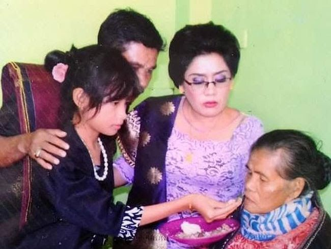

Manulangi Natua-tua,upacara adat batak bentuk balas jasa ortu

Medan - Terdapat berbagai seni budaya dan upacara adat yang berasal
dari masyarakat Suku Batak. Salah satunya yang bikin salut adalah
upacara adat Manalungi Natua-tua, suatu bentuk membalas jasa orang tua
selama ini. Dilansir dari laman Universitas Stekom, Manulangi
natua-tua merupakan sebuah upacara adat Suku Batak yang dilakukan
dengan memberi makan kepada orang tua. Sangat khusus dilakukan bagi si
anak ketika orang tua menginjak masa tua. Upacara Manulangi Natua-tua
ini biasanya dilakukan ketika orang tua memasuki masa-masa kritis
(mendekati kematian). Khasnya pula, upacara adat ini hanya boleh
dilakukan bagi orang tua yang sudah memiliki cucu. Upacara ini dapat
juga dimaksudkan agar penyakit dan bencana menjauh dari orang tua.
Sehingga bagi para anak dan cucu, upacara ini menjadi kesempatan agar
bisa mendapatkan berkat yang dipancarkan oleh sang orang tua. Latar
Belakang Manulangi Natua-tua Manulangi Natua-tua ini menjadi kegiatan
adat yang dekat dengan masyarakat orang Batak. Bahkan dalam tatanan
dan adatnya, tradisi ini menjadi bagian dari hidup dan kehidupan
mereka yang menjadi kebiasaan. Semua tradisi dan upacara adat yang ada
di dalam kehidupan masyarakat Batak memang selalu dianggap bermakna
dan diyakini membawa berkat. Diketahui, Tradisi Manulangi Natua-tua
ini juga masing sering dilakukan.